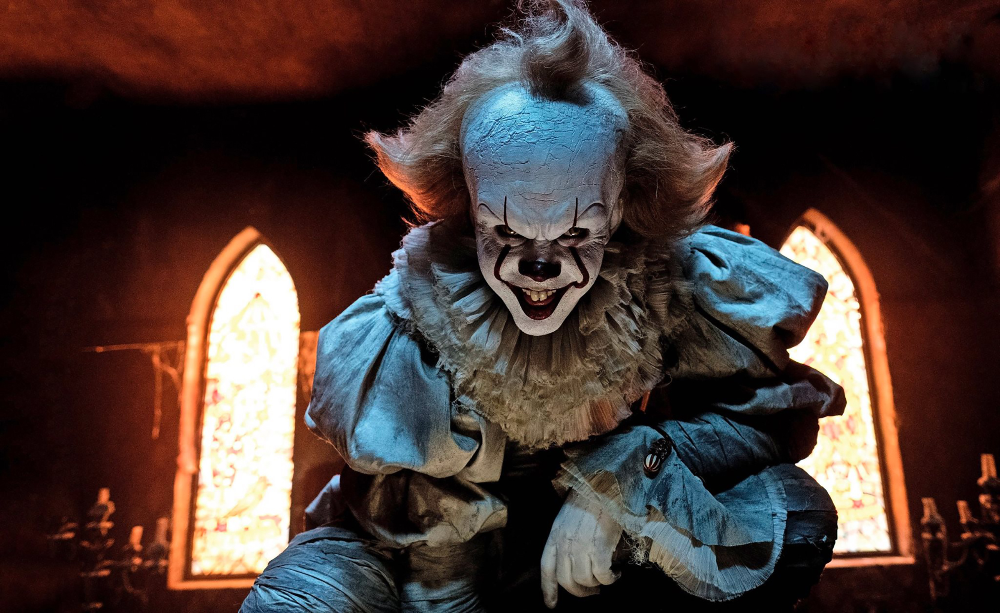
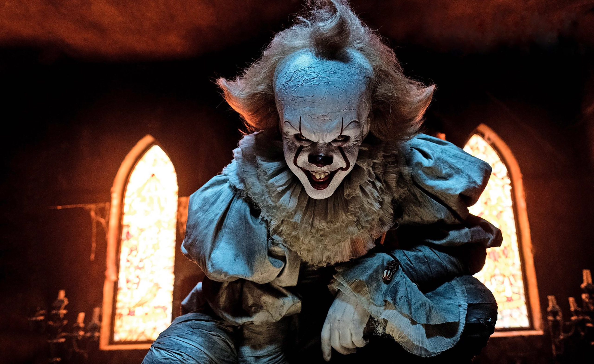
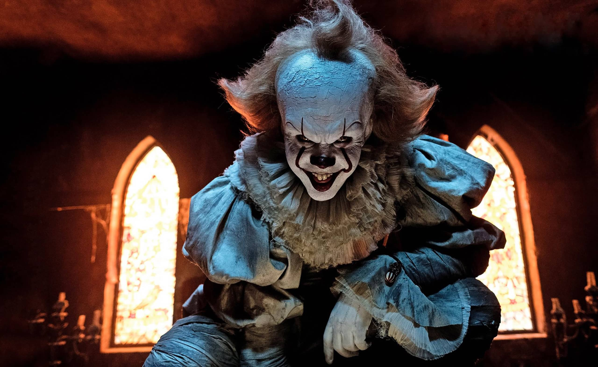
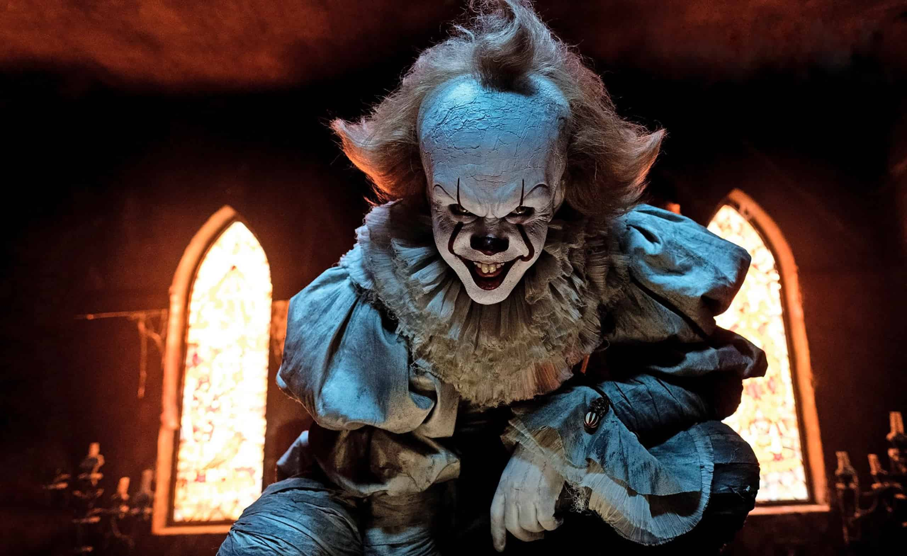

Homepage
Origenele kwaliteit
- Grootte: 1.72MB
- Kwaliteit: Origineel

Foto met quality 90%
- Grootte: 742kB
- Kwaliteit: zie geen vershil nog misschien als je lang kijkt klein beetje onscherper.

Foto met quality 70%
- Grootte: 288kB
- Kwaliteit: nog steeds geen vershil nog.

Foto met quality 40%
- Grootte: 164kB
- Kwaliteit: onscherper en klein beetje visueele pixels maar nog steeds niets om te zeggen verschil.

Besluit
De foto wordt donkerder en zieje pixels hoe lager je gaat.
Uitbrijding
de teskst wordt geblurred hoe dichter bij de nul hoe meer pixels.